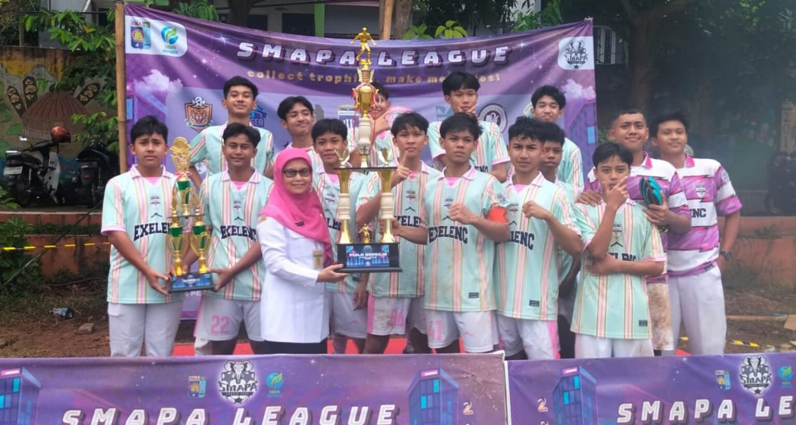

Tentang Liga SMAPA
Liga SMAPA adalah liga sepak bola yang mempertemukan berbagai tim dari kelas 10 dan 11 di SMAPA. Liga ini bertujuan untuk mengembangkan bakat-bakat muda dalam sepak bola, meningkatkan semangat sportivitas, serta mempererat hubungan antar siswa di SMAPA. Selain itu, liga ini juga memberikan kesempatan bagi siswa untuk belajar bekerja dalam tim dan berkompetisi secara sehat, menciptakan atmosfer yang positif di lingkungan sekolah.
Tim yang Berpartisipasi
Berikut adalah tim-tim yang berpartisipasi dalam Liga SMAPA 2025:

Jadwal Pertandingan
- Jadwal Liga SMAPA berlangsung selama 1 bulan, dimulai 16 januari 2025 hingga 26 februari 2025 memperebutkan Tropi bergilir Kepala SMA Negeri 4 Semarang. Selain Tropy bergilir pihak sekolah juga menyerahkan piala juara serta uang pembinaan.